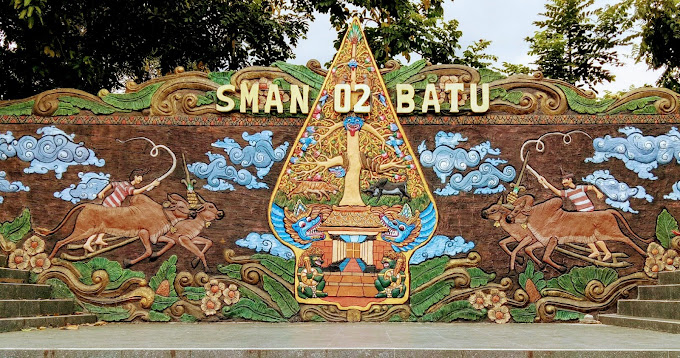

SMA Negeri 2 Batu merupakan salah satu SMA Negeri di Kota Batu, berlokasi di dekat Mapolres Kota Batu dan Gedung DPRD Kota Batu, yaitu di Jalan Hasanudin 01 Junrejo Kota Batu. Sekolah ini berdiri dan mulai beroperasi pada tahun 1997 dibawah kepemimpinan Drs. Suratno sebagai Pejabat Sementara Kepala Sekolah. Pada saat itu SMA Negeri 2 Batu belum memiliki gedung sendiri, masih harus bergabung dengan SMA Negeri 01 Batu.
Sejak tahun 1998 kepemimpinan Drs. Suratno digantikan oleh Dra. Mistin sebagai Kepala Sekolah, sejak saat itu SMA Negeri 2 Batu mulai menempati gedung baru yang terletak di Jalan Hasanudin 01 desa Junrejo kecamatan Junrejo kota Batu. Pada tahun 2002 dengan meningkatnya status Kota Administrasi Batu menjadi Kota Batu, Dra. Mistin diangkat menjadi Kepala Bidang Persekolahan Dinas Pendidikan Kota Batu, dan kepala SMA Negeri 2 Batu digantikan oleh Drs. Abu Sofyan. Pada perkembangan selanjutnya pada tahun 2003 Drs. Abu Sofyan diangkat menjadi Kepala Dinas Catatan Sipil, dan jabatan kepala SMA Negeri 2 Batu digantikan oleh Drs. Suprayitno, M.Pd. sampai bulan Mei 2012, dan dilanjutkan oleh Drs. Pamor Patriawan mulai bulan juni 2012 sampai mei 2020. Kemudian kepala SMA Negeri 2 Batu sekarang dijabat oleh Anto Dwi Cahyono, S.Pd, MM.
Bpk. Anto Dwi Cahyono, S.Pd, MM.
Dalam usianya yang relatif masih muda yaitu berusia 18 tahun, SMA Negeri 2 Batu dalam perjalanannya telah berhasil menjadi salah satu sekolah yang mempunyai beberapa keunggulan dan sebagai sekolah yang memiliki ciri khas yang berbeda dengan sekolah lain, khususnya dalam hal pakaian seragam dan kegiatan extrakurikuler. Untuk pakaian seragam SMA Negeri 2 Batu mempunyai warna khas dan mode tersendiri. Sedangkan untuk kegiatan extrakurikuler di SMA Negeri 2 Batu melaksanakan ekstra yang spektakuler yaitu Robot Lego. Banyak prestasi yang dicapai dari kegiatan extrakurikuler, antara lain pada tahun 2013/2014, sebagai juara 4 lomba robot di USBI Jakarta, juara 1 Guru Kreatif di IPB Bogor pada tahun 2014, dan masih banyak prestasi yang lainnya.
Sejalan dengan visi dan misi Pemerintah Kota Batu, yaitu mengembangkan Kota Batu sebagai Kota Agropolitan dan Kota Wisata, maka SMA Negeri 2 Batu terus berupaya meningkatkan kualitas. Tujuan yang ingin dicapai adalah Terwujudnya lulusan yang unggul prestasi, berbudaya, berkahlak, berwawasan lingkungan dan berdaya saing berlandaskan iman dan taqwa. Sehingga ke depan diharapkan dapat memberikan sumbangsih pada penyediaan sumber daya manusia yang unggul, kompetitif, kreatif, inovatif, arif, dan beretos kerja tinggi. Dengan ketersediaan SDM yang berkualitas akan berdampak pada percepatan pencapaian Kota Batu sebagai Pusat Pariwisata yang tetap menjujung tinggi kearifan lokal dan berdaya saing global.
SMA Negeri 2 Batu didirikan pada tahun 1997, terletak di dusun Jeding RT. 01 RW. 06 Desa Junrejo Kecamatan Junrejo Kota Wisata Batu, tepatnya berada di jalan Hasanudin. Desa Junrejo terletak lebih kurang 5 km dari pusat Kota Batu, berada di perbatasan antara Kota Batu dengan kabupaten Malang. SMA Negeri 2 Batu Menempati tanah seluas 10.400 m2 yang sepenuhnya milik negara. Jumlah seluruh personil sekolah ada sebanyak 87 orang, terdiri atas guru 66 orang, karyawan tata usaha 21 orang, meliputi 11 orang staf administrasi, 5 orang petugas kebersihan, 3 orang satpam dan 2 penjaga sekolah. Jumlah peserta didik pada tahun pelajaran 2017/2018 seluruhnya sebanyak 909 orang terbagi dalam 29 rombongan belajar. Peserta didik di kelas X sebanyak 10 rombongan belajar dibagi 3 peminatan, 1 rombel ilmu bahasa dan budaya, 5 rombel Matematika dan Ilmu Alam, 4 rombel ilmu sosial. Peserta didik kelas XI sebanyak 10 rombongan belajar dibagi 3 peminatan MIPA ada 5 rombongan belajar, kelas XI IPS ada 4 rombongan belajar, dan Kelas XI IBBu ada 1 rombongan belajar. Sedangkan untuk kelas XII MIPA ada 4 rombongan belajar, kelas XII IPS ada 4 rombongan belajar, dan kelas XII Bahasa ada 1 rombongan belajar. Lebih dari separuh peserta didik (85 %) berasal dari Kota Batu, sisanya berasal dari daerah luar sekitar Kota Batu.
Dalam upaya meningkatkan kompetensi, manajemen SMA Negeri 2 Batu telah memfasilitasi seluruh Tenaga Pendidik dan Tenaga Kependidikan untuk mengikuti berbagai bentuk pelatihan, workshop, seminar, lokakarya, atau MGMP/MGMPS. Berbagai pelatihan yang telah diikuti oleh pendidik meliputi Pelatihan Terintegrasi Berbasis Kompetensi (PTBK), Contextual Teaching and Learning (CTL), Pembelajaran Aktif, Kreatif, Efektif, dan Menyenangkan (PAKEM), Penelitian Tindakan Kelas (PTK), Karya Tulis Ilmiah (KTI), Sosialisasi dan Evaluasi Kurikulum Tingkat Satuan Pendidikan (KTSP), Model-model Pembelajaran, Inovasi Pembelajaran, dan sebagainya.
Upaya melengkapi prasarana dan sarana pendidikan bertaraf Nasional, SMA Negeri 2 Batu senantiasa menambah, melengkapi, merehabilitasi, dan mengoptimalkan prasarana dan sarana pembelajaran secara bertahap dan berkelanjutan. Langkah yang telah ditempuh diantaranya adalah rehabilitasi ruang kelas dan ruang penunjang, penambahan alat/media/bahan pembelajaran berbasis IT, dan penataan lingkungan sekolah sebagai pusat dan sumber belajar yang lebih menyenangkan dan bersahabat.
Dalam rangka mengefektifkan proses pembelajaran kurikulum 2013, mulai Tahun Pelajaran 2013/2014 hingga sekarang, SMA Negeri 2 Batu mengembangkan pembelajaran dengan sistem moving class (Kelas Berpindah) pada pelajaran Lintas Minat untuk kelas X, XI dan XII. Kelas ditata per mata pelajaran, yang secara bertahap sekolah akan melengkapi setiap kelas dengan sumber dan media pembelajaran sesuai dengan karakteristik setiap mata pelajaran.